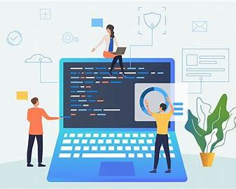
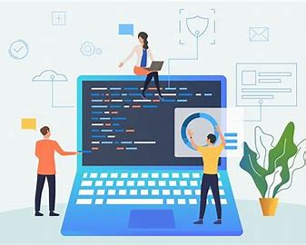

Software engineering is a discipline that involves designing, developing, testing, and maintaining software systems and applications.
It encompasses a wide range of activities, from the initial concept and requirements gathering to the final deployment and ongoing maintenance of software products.
Here are some key aspects of software engineering:
| 1.Requirements Analysis: Software engineers begin by understanding and documenting the needs and
requirements of the software. This involves talking to stakeholders, users, and other relevant
parties to define what the software should do.
|
| 2.Design:Once the requirements are clear, software engineers design the architecture
and structure of the software. This includes creating system blueprints, data models, and
deciding on the technologies and frameworks to use.
|
| 3.Implementation: This phase involves writing the actual code for the software.
Software engineers use programming languages and development
tools to create the software's functionality, following the design specifications.
|
|
4.Testing: Software engineers conduct various tests to ensure the software works correctly
and meets its requirements. This includes unit testing,
integration testing, and system testing to identify and fix defects and issues.
|
|
5. Maintenance: After deployment, software engineers are responsible for maintaining the software.
This includes addressing bugs,
making updates to accommodate changing requirements, and improving performance and security.
|
|
6.Documentation: Proper documentation is crucial for software engineering. Engineers document the design, code,
and usage of the software to make it understandable and maintainable.
|
|
7.Version Control: Software engineers use version control systems like Git to track changes,
collaborate with team members, and manage codebase versions.
|
|
8.Software Development Methodologies: There are various development methodologies like Agile,
Scrum, Waterfall, and DevOps that provide structured approaches to software engineering projects.
These methodologies help manage the software development process efficiently.
|
|
9.Quality Assurance: Ensuring software quality is a key aspect of software engineering.
Quality assurance involves testing, code reviews,
and adhering to coding standards to maintain the software's reliability and performance.
|
|
10.Security: Security is a top concern in software engineering.
Engineers must address security vulnerabilities and follow best practices
to protect against cyber threats.
|
|
11.Performance Optimization: Software engineers optimize the performance
of software to ensure it runs efficiently,
responds quickly, and uses resources effectively.
|
|
12.User Experience (UX) Design: In many cases, software engineers collaborate with
UX designers to create user-friendly and visually appealing interfaces.
|
|
13.Deployment and DevOps: Deploying software to production environments and managing it
efficiently through the DevOps practices is an integral part of software engineering.
|
|
Software engineering is a highly interdisciplinary field that requires a deep
understanding of programming languages, algorithms, data structures, software design principles, and an ability to work effectively in a team. It plays a crucial role in the development of virtually all software applications, from simple mobile apps to complex enterprise systems.
The field continues to evolve with the introduction of new technologies and methodologies.
|

.jpg)
.jpg)
.jpg) 

.jpg)